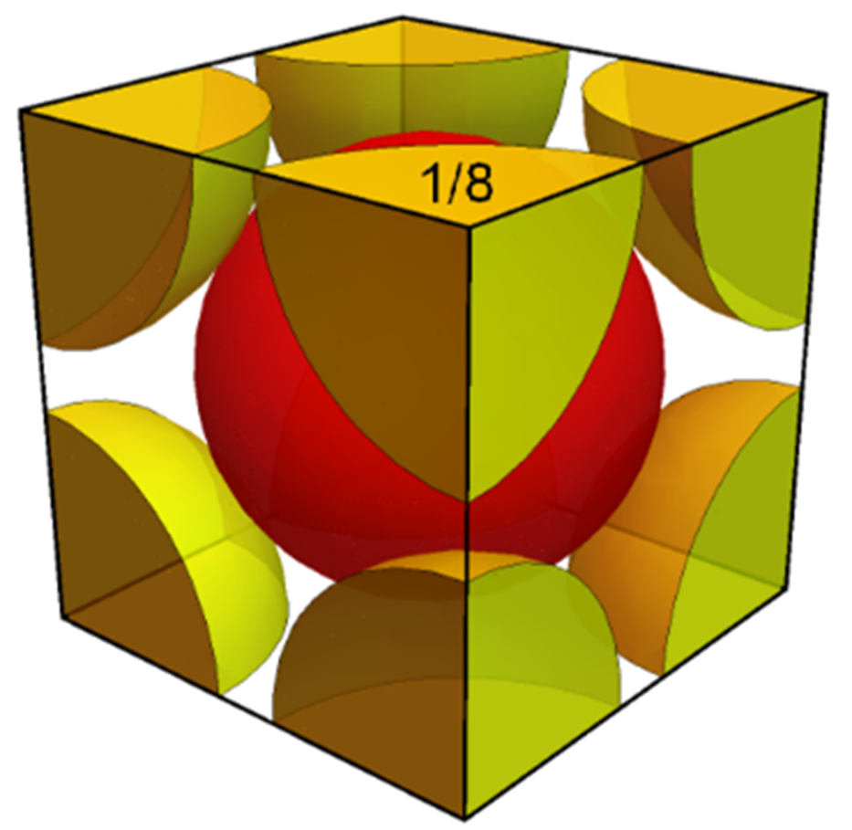

Show that the atomic packing factor for the body-centered cubic crystal
structure is 0.68.
Objectives:
Identify the direction that atoms are touching in the BCC structure.
Determine the number of whole atom volumes in the BCC structure.
Determine the BCC edge length in terms of the atom radius.
Calculate the atomic packing factor for the BCC structure.
Atomic Packing Factor (APF)
Body-Centered Cubic (BCC)

Cut-sphere model of the BCC unit cell. Each corner atom has only 1/8
of its volume within the unit cell.
Number of atoms in the BCC unit cell:
\[8 \text{ corners} \times \frac{1}{8}
\left(\frac{\text{atom}}{\text{corner}}\right) + 1 \text{
body center atom} = 2 \frac{\text{atoms}}{
\text{unit cell}}\]
Total volume of atoms in the unit cell:
\[ 2\text{ atoms}\times \left(\frac{4}{3} \pi R^3\right) = \frac{8}{3}\pi
R^3\] where \(R\) is the radius of the atoms and \(\frac{4}{3} \pi R^3\)
is the volume of a sphere.
Length of the body diagonal:
For the BCC structure, atoms touch along the body diagonal as shown in
figure (a) to the right. Six of the corner atoms have been removed from
the BCC unit cell in this figure to make it easier to see the touching
atoms. The triangle shown in bold has been redrawn in the second figure.
The height of the triangle is equal to the unit cell edge length, \(a\),
and the bottom leg is a face diagonal and therefore equal to \( a\sqrt{2}
\). The diagonal of the cube is then given by the Pythagorean theorem as
\[\text{Body diagonal} =\sqrt{(a\sqrt{2})^2 + (a)^2} = a\ \sqrt{3} \]
Finding the edge length, \(\boldsymbol{a}\):
From the figure (b) above, we can also see that the body diagonal is equal
to \(4 R\). This can be observed by counting the number of line segments
of length \(R\) shown along the hypotenuse of the figure. The important
condition here is that the atoms are touching along this direction.
Therefore we have, \[ 4 R = a\ \sqrt{3}\quad \text{ or }\quad
a=\frac{4R}{\sqrt{3}}\]
Finally:
From the definition of the atomic packing factor, \[ APF =
\frac{\text{total volume of atoms in the unit cell}}{\text{unit cell volume}}
= \frac{\frac{8}{3}\pi R^3}{a^3}\] \[=\frac{\frac{8}{3} \pi\
R^3}{(\frac{4\ R}{\sqrt{3}})^3} = \frac{\pi\ \sqrt{3}}{8} \approx 0.68\]
Therefore, 68% of the BCC unit cell is composed of atoms and the remaining
32% is empty space.
How would this derivation change for the FCC structure?